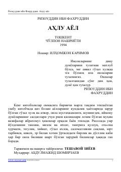

AАOila qurish, er-xotin munosabatlari va go'zal axloq qoidalariga bag'ishlangan ibratli risola.
Mazkur risolada oila qurish, umr yo'ldoshini tanlash, er va xotin o'rtasidagi munosabatlar hamda oilaviy hayot odoblari haqida fikr yuritiladi. Muallif hayotiy misollar va ibratli hikoyalar orqali xotin-qizlarning jamiyat va oiladagi o'rnini yoritib beradi. Kitob keng kitobxonlar ommasiga mo'ljallangan bo'lib, axloqiy tarbiyada muhim qo'llanma hisoblanadi.